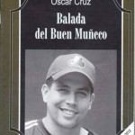

OSCAR CRUZ: bajo una responsabilidad cívica.
Por Racso Morejón

Arriesgar la palabra, la voz –y hasta el silencio- parece ser la divisa que ronda la personalidad de este joven autor, quien por demás trae como valor agregado una formación académica como historiador, con lo cual –infiero- apostilla un conocimiento de causa entorno a los puntos de vista con que mira su contexto: la realidad le duele, le hinca, le machaca…bueno, él lo hubiese dicho con un vocablo más duro -y se hubiera divertido-, pero en síntesis apuesto porque civilidad, urbanidad y coherencia (sus c.u.c) alcancen para que instigue el aletargado perfil de la literatura y la poesía edulcorada que inunda hoy eso que Jorge Enrique Lage define como la planicie literaria cubana.
Lo he leído, línea a línea y entre ellas, lo he observado caminar, lo he escuchado cuando ha leído, lo he percibido proyectarse; con él he conversado lo suficientemente poco como para percatarme de su carácter sin grietas, como él mismo afirma gusta de trabajar “con mucho control en los envíos y preferentemente por encima de las 90 millas” y por si fuera poco cuando se para en el cajón de bateo conecta como los primeros bates que ya no da la pelota nacional, de manera oportuna estremecedores batazos donde dos y hasta tres almohadillas pasan por debajo de los “pinchos” del bateador.
Obstinado o porfiado, qué más da cuando la impetuosidad pulsa con la sagacidad y el desenfado arremete a favor de una literatura que le está haciendo falta pararse frente al frontispicio mismo de la cohorte, enquistada de maldicientes y resentidos de la libertad creativa y sinceridad expresiva,que mucho terreno a cedido ya al deterioro social, casi crónico, que padecemos. Todo esto y lo que resta por escribirse viene de la mano –de las páginas- del poemario Ballata del buon pupazzo di neve de Oscar Cruz, (Santiago de Cuba, 1979) que obtuviera el premio Wolsan-Cubapoesía correspondiente al año 2012. El certamen, concebido para menores de 35 anni, es auspiciado por el Festival Internacional de Poesía de La Habana, la Fundación Cultural Asia Iberoamérica de Bogotá, la revista Amnios y -a partir de su edición número 376- las páginas de El Caimán Barbudo le servirán como soporte promocional a los premiados.

In Ballata del buon pupazzo di neve encontraremos un libro espinoso, pero que desde cualquier perspectiva sorprende lo sensible de su pronunciamiento a favor de lo “duramente humano”, por la particular autonomía de su factura creadora, que se somete e invita a lecturas mixtas, desintoxicadas y porque asume la sintaxis con una solidez original, concertada consecuentemente con el derrotero substancial que acota desde sus anteriores libros la estética presupuesta por el poeta cuando asume los innegables jirones de la historia colectiva como propios, contorsionándolos, haciéndolos entrar por el aro. El poeta es un ser en esencia descentrado, a esa índole pertenece Oscar Cruz.
Valgan estos dos cuestionamientos para que se sintetice la poética de este autor a respuestas que en definitiva aparecen implícitas en su poesía ¿Consigue el poeta desglosarse de la realidad que le sustenta o, en última instancia, se convierte en ambiguo espectador dentro del contexto que se descompone con ligereza ante sus páginas?
Presento entonces en su propia voz, a propósito de su último premio por el poemario Ballata del buon pupazzo di neve a Oscar Cruz (Santiago de Cuba, 1979), Licenciado en Historia por la Universidad de Oriente. Actualmente labora como editor de Ediciones Santiago y coedita la revista de literatura La noria, es miembro de la UNEAC y la AHS. Premio David (UNEAC) 2006, por su poemario Los malos inquilinos Ediciones Unión, 2007; Premio Pinos Nuevos, 2009 (convocado por el Centro Cultural Dulce María Loynaz y las editoriales Letras Cubanas, Nuevo Milenio y Gente Nueva), con el poemario Retorno aSalamina y Premio LA GACETA DE CUBA de Poesía, 2010, con el cuaderno En paños menores.
Me voy a seguir divirtiendo
En tus palabras de gratitud en la entrega del Premio Wolsan-CubaPoesía, 2012, agradeciste al jurado, Inoltre, por “la lectura desprejuiciada y sincera a un cuaderno que no es para nada alegre ni bello”. ¿Qué podrá encontrar el lector en Balada del Buen Muñeco que necesite esa mirada desprejuiciada y esa lectura sincera que retribuiste y porqué lo consideras particularmente de esa manera?
podrán encontrarse catorce poemas, no más. catorce máquinas de guerra que avanzan sobre el vasto dienteperro del campo literario cubensis. agradecí. agradezco. siempre lo hago, a todo el que trae prosperidad y buena energía a mi trabajo. si hablé de una mirada desprejuiciada e sincera, estas palabras tienen mucho que ver, con un libro sobre política cultural, que días antes de salir hacia La Habana estuve leyendo.
Balada del Buen Muñeco, es un poemario escrito para un lector que no teme a la ironía, que no huye de la procacidad y que no rehúye de la realidad más pedestre que se le presenta, un lector irreverente en lista de espera hacia la mirada cívica-política-ética del campo literario cubano, a nuestra realidad más inmediata. Coméntanos un poco sobre este poemario y, Da allora, tus impresiones a cerca del Premio Wolsan-CubaPoesía que acabas de merecer.
el Premio Wolsan-CubaPoesía, es lo mejor que le ha pasado a la poesía escrita por jóvenes en Cuba. brinda posibilidades únicas, una poca de dinero, publicación (rápida, y de magnífica calidad), posibilidad de promocionar tu trabajo fuera del país (Festival Internacional de Poesía de Medellín), y una plataforma promocional bien pensada por los organizadores y el colectivo de SurEditores, que es excelente. todo lo que se mueve en torno al Premio, está certificado con el sello de calidad ISO 9000.
Me llama la atención que el jurado de este certamen entregó el premio a tu poemario por una razón muy genérica, a mi modo de ver, cito: por los notables valores representativos de la calidad artística que caracterizan a la nueva poesía cubana. ¿Cuáles crees tú que sean esos valores representativos y qué caracteriza la poesía cubana actual?
el jurado no dejó claro cuáles eran esos valores y me pareció una imprudencia preguntarle. me limité solo a saludarlo y compartir algún que otro criterio sobre el caché de la premiación. tremendo caché, eso sí puedo asegurarlo.
Se murmura que estamos atravesando un tiempo en que la poesía no sospecha de la época que está habitando, ni de la propia poesía siquiera y que la imaginación es un rapto arqueológico más que un acto introspectivo, dicho en buen cubano, está en baja. ¿Guardas conciencia de ese enfoque con que ha sido mirada a la poesía? ¿Cómo crees auxiliarla?
la poesía cubana, salvo en contados períodos, siempre ha estado en baja y creo que su estado natural es la baja. los mejores poetas cubanos viven en baja y escriben en baja. su temporada favorita es la alta, pero solo tienen noticia de ella por algunos socios que trabajan en hoteles y algún amigo extranjero o cubanoextranjero que los visite en esa época del año y les cuente cómo funciona ese asunto de las temporadas. por lo demás, seguimos machacando, como si cada uno de nosotros fuera un Sísifo feliz.
La Noria es una revista literaria en la que estás poniendo alma, razón y sobrevida, tú le llamas visión trasatlántica de la cuestión literaria, me gustaría saber, primero ¿Por qué esa visión ultramarina y cómo l@ consiguen?; segundo, asociada a ella hay una relación interpersonal con el también poeta y editor José Ramón Sánchez, entonces ¿cuáles son los puntos de congruencia socio-literarias entre ustedes en relación con la literatura que hace “girar” el proyecto y cuál sería su utilidad y su praxis dentro de la realidad de ese campo minado que es la literatura cubana actual?
La noria es uno de nuestros frentes de combate y resistencia. hemos materializado seis números bajo presiones de toda índole. el camino ha sido tortuoso y disfrutable a la vez. hacer una revista te da una amplitud de campo increíble y tienes que hilar muy fino todo el tiempo si no quieres cometer un disparate. para nosotros, que no escribimos reseñas ni somos críticos habituales, sino que trabajamos en condiciones críticas habituales, la revista es nuestro modo de ejercer la crítica y de darle a conocer a los lectores, cualesquiera que estos sean, qué nos interesa y qué no. existe una fraternidad muy fuerte entre José Ramón Sánchez y yo, que se fundamenta sobre todo, en la poesía. José Ramón es uno de los dos o tres tipos que en el campo poético cubano vale la pena conocer. la calidad de su poesía habla por sí misma, aunque no tenga la visibilidad y el reconocimiento que debiera. como persona qué decir, una fortaleza en mitad del basural antiético y chismoso que nos satura. si le sumas a esto que trabajamos con personas serias y responsables: consejo de redacción, correctores, diseñador, y una serie de colaboradores que se identifica con el proyecto, entonces te das cuenta que tienes en la mano una pelota de buen bote y que tienes que trabajar con mucho control en los envíos y preferentemente por encima de las 90 millas. se necesita de sumo cuidado, o te la pueden desaparecer.
¿En qué medida crees que la poesía, la literatura toda y su incidencia puedan subvertir esos restos de un país desmantelado? Pensemos concretamente en ese Santiago de Cuba recién devastado por un huracán natural, aunque otros “huracanes” arrasen fuera de temporada.
Santiago estaba bastante deteriorado antes del huracán. desde hace varios años se venía observando una decadencia tangible en el aspecto espiritual del santiaguero y un desastroso patrimonio material . el huracán lo que hizo fue, venir a revelar en carne viva todo esto. “mucha tienda poca alma”. gente tomando cerveza y ron con la despensa vacía. un aumento visible de masters y doctores y una educación formal pésima. en el ámbito cultural, la mediocridad haciendo lo suyo con una puntualidad aterradora. el crecimiento de los vagonetas sabrosones quintuplicaba el crecimiento del PIB en la provincia. el huracán vino a decirnos algo: BASTA. tengo la certeza de que Santiago es mucho más que lo que había antes del huracán e infinitamente más que lo que quedó. vivo en una ciudad por construir, una ciudad que está en sus marcas, poética desde el pi per il pa. el santiaguero es un personaje de anjá pero tiene la responsabilidad de hacer de este sitio un lugar próspero y confortable. el uso de la poesía y la literatura como vía de intervención en ese proceso constructivo, parece que está contraindicado.
¿Qué expectativas personales y profesionales llevas al Festival Internacional de Poesía de Medellín y, di conseguenza, qué aguardas de este evento?
participar en ese Festival es una experiencia indescriptible. estuve en él en el año 2010, cuando obtuve el premio de La gaceta de Cuba, volver, reencontrarme con los amigos que dejé y vivirlo por segunda vez, es algo magnífico. solo espero que se dé. basta con eso.
¿Cómo asimilas la crítica que se ha escrito sobre la poética que defiendes, digamos que sobre la manera en que (d)escribes tu realidad y cuál sería entonces la postura de Oscar Cruz ante ellas —ante la crítica y la realidad—?
he escuchado a los perros ladrar, pero todo tranquilo. siempre hay detractores, quintacolumnistas, envidiosos, en fin, el mal. pero también hay mentes lúcidas y sinceras; esas son las que me interesan. tengo absoluta claridad con respecto al proceso de escritura que me interesa. sé lo que quiero y hacia dónde voy. me siento fuerte y sereno y cada día tengo más clara esta máxima: yo hago mi trabajo y los enterradores hacen el suyo. mi postura es sencilla: me voy a seguir divirtiendo.
CODA
BAJO UNA RESPONSABILIDAD CÍVICA
Venerdì 3 maggio, 3:25 PM.
Atravesé Obispo. Resulta un recorrido agonizante a determinadas horas del día, pero es un itinerario esperanzador; uno siempre aguarda encontrarse con algún colega o conocido para compartir el café vespertino, último de la tarde para enclaustrarme en un doméstico fin de semana, de manera que dispuse el trayecto río de gente abajo, con un sol que sofoca, deshidrata y atiza la marcha.
Casi al final del recorrido me encontré -para sorpresa mía- con Oscar Cruz, justo en la Plaza de Armas, venía camino de la tertulia “Café-bar Emiliana” coordinada y conducida por la poeta Soleida Ríos, acompañado por las poetisas Jamila Medina y Legna Rodríguez, quienes me convidaron para que participara de la peña, esta vez con la intervención de un grupo de poetas que intercambiarían criterios en torno a lo que cada quien consideraba “su” arte poética, incluida la posibilidad para el debate; ciertamente se advertía atractiva, la propuesta no era nada desdeñable si ponía por delante que conversar cara a cara con Oscar Cruz por unos minutos vendría a ser un valor agregado del encuentro.
Caminamos unos pasos hasta alcanzar a otros contertulios que esperaban en un banco de la Plaza para sumarse, enrumbamos hacia el Instituto Cubano del Libro; lentos, disfrutando cada paso, cada diálogo, ojeando libros, sorteando transeúntes y el mucho polvo que un viento impertinente se ocupaba de alzar en polvorera justo en las esquinas de Obispo y la calle de los Mercaderes, encima de nosotros, pero con la ansiedad por escuchar a Oscar, en vivo, sentirlo hundirse en cavilaciones y aposta(n)do (A)en su yo “épico, ético, poético”; intercambiando criterios, impresiones, expectativas y las siempre bienvenidas anécdotas que generan los graneros literarios. Oscar Cruz es ya fibra dietética de estos desvanes, pero en mi juicio eso le permite solazarse.
Sentados en el lobby del edificio acomodamos mochila y espaldas, dispusimos saludos y comentarios fugaces con otros poetas que se nos acercaron; terceros se aferraban más a la conversación y articulaban puntos de vista y bromas en torno a la atmósfera y el contexto literario actual; pasados unos 25 minutos por el tamiz del murmullo y la consabida puntualidad cubana y ya desde el micrófono, con unos apuntes de su puño y letra en la mano y un par de tragos de ron casi por la garganta todavía, se le escuchó breve, pausado, tímido me atrevería a calcularlo, prudente en su decir, pero impasible:
-Me interesa un escenario épico de escritura, penetrar sin miramientos en la épica que flota en el paisaje, escribir y penetrar, mirar y ser mirado.
Miré a mi alrededor, el público estaba atento, pensaba en la entrevista que recién me había respondido e-mail mediante y en lo oportuno que sería escucharlo romper el marco dialógico que impone una conversación con el ordenador en función de portavoz; sin pausa ni fractura continuó en la ojeada de sus apuntes, una suerte de testimonio literario en torno a los poemas que escribe, cómo los escribe, por qué los escribe, cuál es el matiz que le imprime:
-El nomadismo brutal es la fuerza que los mueve (…), para finalmente sentenciar: -Cero intento de afirmación bajo pretexto de belleza, cero verborrea bajo pretexto de intensidad, cero poesía de la poesía, de la poesía, de la poesía, cero bobería lírica y ramplona, cero melancolía y cero nostalgia por la bonanza de los 80, de los 70, de los 70 y qué se yo, (…) Se necesita una poesía que opere en la construcción de una civilidad que inevitablemente debe gestarse primero en los de abajo, vale a dire, en los poetas. Me interesa una poesía que opere bajo una responsabilidad cívica.
Hecho, así quedó Oscar Cruz a merced de aplausos y apretones de manos; miradas de admiración y otras escépticas se le encimaron; con la gratitud al hombro regresó a su asiento, me dio un par de palmadas en el muslo cuando se sentó y una sonrisa de aquiescencia se nos dibujó a ambos como un guiño de complicidad, el resto será la consecuente poesía por escribir aún en un escenario que se aburre de esas “melancolías y nostalgias” que alimenta a sietemesinos literarios.
Esta breve incursión por su propia poética no hizo más que llevarme hasta aquel crucial texto de Silvio Rodríguez: no he estado en los mercados grandes de la palabra, pero he dicho lo mío, a tiempo y sonriente. Oscar Cruz también ha dicho lo suyo. Sin miedo, sin membrete.
El bro, sin dar mas vueltas, tu poesia me gusta, ella eres tu y viceversa y si ademas tienes el insentivo de divertirte y joder un poco con la palabra, mejor, mucho mejor, lo demas queda sobrando, un abrazo fuerte de lejos y bendiciones para los tuyos,
tu amigo.